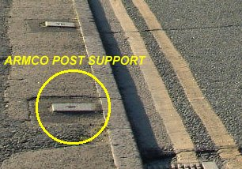

Birmingham, United Kingdom
Type: Street CircuitIn 1985, the Birmingham City Council passed the Birmingham Road Race Bill, which allowed the Birmingham Superprix for Formula 3000 cars to be held on a circuit of closed streets near the city centre for two days during the August Bank Holiday. Previously, all motor racing on the public streets of mainland Britain had been outlawed (unless specifically allowed for in private legislation).
The first Superprix was held in 1986 and was subjected to torrential rain. After extensive delays, this first race was run to a reduced distance. Over the next few years, races featured numerous accidents and the excessive noise over the course of the weekend proved to be unpopular with some members of the local community. The races were also commercially unsuccessful, so for 1991 plans were proposed for the race to be organised privately on an extended 3-mile circuit. However, these plans were never implemented and the race was dropped from the calendar. At present, the Birmingham circuit remains the only street course to have been established on the British mainland.
|| Contents || Bristol Street | Chicane | Peter Barwell Hill | Hairpin &
Belgrave Middleway |
| Sherlock Street | Pershore
Street & Bromsgrove Street || Home ||
Return to racingcircuits.net's Historic Circuits Photo Archive Main Index

In most of the photographs, you may see small drain covers embedded onto the tarmac or
pavement. These are where the armco posts were located.
Photographs and information kindly supplied by David Page